![Description for the image starts here. Figure 1 : A closed figure having 3 sides. Figure 2 : A closed figure having 3 sides. Figure 3 : A non-closed figure having 3 sides. Figure 4: A non-closed figure formed by 3 line segments. Figure 5 : A closed figure formed by 2 straight lines and a curvy side. Figure 6: A closed figure having 4 sides. Figure 7: A closed figure formed by 3 line segments. Figure 8: A closed figure formed by 3 line segments. Figure 9 : A closed figure having 4 sides. Figure 10: A closed figure formed by three curvy lines. Figure 11 : A closed figure formed by three line segments. Figure 12 : A closed figure formed by three line segments. Figure 13 : A closed figure formed by three line segments. Description for the image ends here.](images/image-91.png)
Learning Objectives
To understand the formation of triangles and the basic elements of a triangle.
To know the types of triangles and their properties.
To draw parallel and perpendicular lines using a set square.
We already studied the basic geometrical concepts such as angles and its types, drawing line segments, drawing and measuring angles in the first term. In this term, we will study triangles and their types, construction of parallel and perpendicular lines to a given line segment.
MATHEMATICS ALIVE – TRIANGLES IN REAL LIFE
The triangle is used in most types of construction work including bridges, buildings, cell-phone towers, aeroplane wings and pitched roofs. Its use in construction gives an object the quality of stiffness, resulting in rigid and strong structures.
Think about the situation:
A teacher distributes 2, 3, 4 and 5 sticks of equal lengths to four students and asks them to form a closed figure. Three students make the following figures.
But one of the students who has 2 sticks with him creates the following figure.
He is not able to create a closed figure. Do you know why? Can you guess the least number of sticks required to form a closed figure? Three sticks. If you had formed a closed figure with three sticks, then what shape would you get? Is there any special name for it? Yes. Its triangle.
A closed figure formed by three-line segments is called a triangle.
Activity
Classify the given shapes into triangles and non triangles.
Mark 3 points A, B, C on a paper, such that they do not lie on a straight line. Consider the line segments AB, BC and CA.
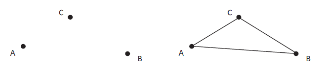
We see that they form a triangle ABC which is represented as Triangle ABC or Triangle BCA or Triangle C, A, B.
In Triangle ABC, the line segments AB, BC and CA are called the sides of the triangle and angle C, A, B, angle ABC and angle BCA (angle A, angle B & angle C) are called the angles of the triangle. The point of intersection of two sides of the triangle is called the vertex. A, B and C are three vertices of triangle ABC. Hence, a triangle has 3 sides, 3 angles and 3 vertices.
Think
Can a triangle be drawn using 3 points on a straight line?
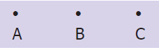
Some triangles are drawn in the dotted sheet. Try to draw as many triangles as you can. Then, measure the sides and angles of all triangles and fill the table given below
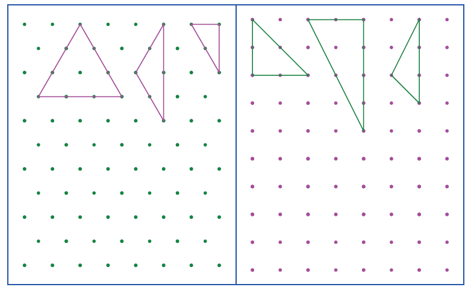
Serial Number |
Measure of angles |
Sum of the measure of angles |
Nature of angles |
Measure of sides |
Nature of sides |
Serial Number 1 |
Measure of angles 60 degree, 60 degree, 60 degree |
Sum of the measure of angles 180 degree |
Nature of angles Three angles are equal |
Measure of sides 3 centimeters , 3 centimeters , 3 centimeters |
Nature of sides Three sides are equal |
Serial Number 2 |
Measure of angles dash |
Sum of the measure of angles dash |
Nature of angles dash |
Measure of sides dash |
Nature of sides dash |
Serial Number 3 |
Measure of angles dash |
Sum of the measure of angles dash |
Nature of angles dash |
Measure of sides dash |
Nature of sides dash |
Serial Number 4 |
Measure of angles dash |
Sum of the measure of angles dash |
Nature of angles dash |
Measure of sides dash |
Nature of sides dash |
Serial Number 5 |
Measure of angles dash |
Sum of the measure of angles dash |
Nature of angles dash |
Measure of sides dash |
Nature of sides dash |
Serial Number 6 |
Measure of angles dash |
Sum of the measure of angles dash |
Nature of angles dash |
Measure of sides dash |
Nature of sides dash |
From the table, we observe the following:
In a triangle,
• If the measure of all angles are different, then all sides are different.
• If the measure of two angles are equal, then two sides are equal.
• If the measure of three angles are equal, then three sides are equal and each angle measures 60 degree.
• Sum of three angles of a triangle is 180 degree.
Activity
Students are divided into groups and each group is given 3 sticks of length 9 units, 2 sticks of length 3 units, 2 sticks of length 2 units, 1 stick of length 5 units and 1 stick of length 4 units. Using the given sticks, they are asked to form three triangles, find the length of the sides of each triangle and tabulate them.
Triangle |
Length of side 1 |
Length of side 2 |
Length of side 3 |
All sides are equal or 2 sides are equal or 3 slides are different |
Triangle 1 |
Length of side 1 dash |
Length of side 2 dash |
Length of side 3 dash |
All sides are equal or 2 sides are equal or 3 slides are different dash |
Triangle 2 |
Length of side 1 dash |
Length of side 2 dash |
Length of side 3 dash |
All sides are equal or 2 sides are equal or 3 slides are different dash |
Triangle 3 |
Length of side 1 dash |
Length of side 2 dash |
Length of side 3 dash |
All sides are equal or 2 sides are equal or 3 slides are different dash |
Read the table and answer the following questions.
Question Number 1. Was each group able to form 3 triangles?
Question Number 2. In each of the triangle formed, how many sides are equal?
1) If three sides of a triangle are different in lengths, then it is called a Scalene Triangle
Examples:
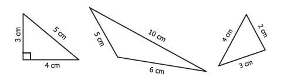
2) If any two sides of a triangle are equal in length, then it is called an Isosceles Triangle
Examples:
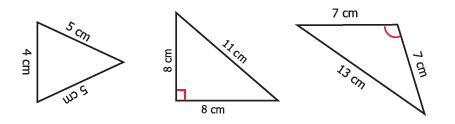
3) If three sides of a triangle are equal in length, then it is called an Equilateral Triangle
Examples:
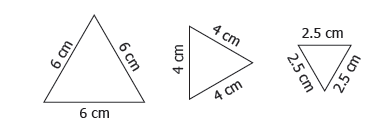
Thus, based on the sides of triangles, we can classify triangles into 3 types.
Try these
Complete the following table. In any triangle,
Serial Number |
Side 1 |
Side 2 |
Side 3 |
Type of Triangle |
Serial Number 1. |
Side 1 6 centimeters |
Side 2 7 centimeters |
Side 3 8 centimeters |
Type of Triangle Scalene Triangle |
Serial Number 2. |
Side 1 5 centimeters |
Side 2 5 centimeters |
Side 3 5 centimeters |
Type of Triangle dash |
Serial Number 3. |
Side 1 2.2 centimeters |
Side 2 2.5 centimeters |
Side 3 3.2 centimeters |
Type of Triangle dash |
Serial Number 4. |
Side 1 7 centimeters |
Side 2 7 centimeters |
Side 3 10 centimeters |
Type of Triangle dash |
Serial Number 5. |
Side 1 10 centimeters |
Side 2 10 centimeters |
Side 3 10 centimeters |
Type of Triangle dash |
Serial Number 6. |
Side 1 10 centimeters |
Side 2 8 centimeters |
Side 3 8 centimeters |
Type of Triangle dash |
Write the given angles as acute, obtuse or right angle formed by two lines segments AB and AC
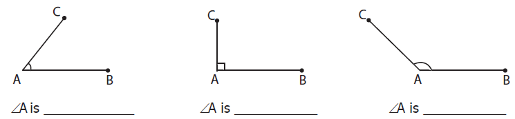
Now, join the third side to form a triangle in each case and identify the kinds of angles and list them down.
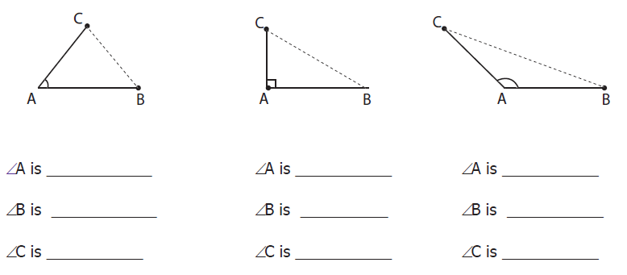
Now carefully look at these three triangles,
1) If three angles of a triangle are acute angles (between 0° and 90°), then it is called an Acute Angled Triangle.
Examples:
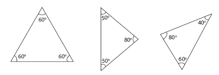
2) If an angle of a triangle is a right angle (90˚), then it is called a Right-Angled Triangle.
Examples:
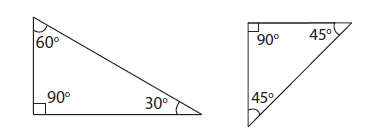
3) If an angle of a triangle is an obtuse angle (between 90˚ and 180˚),then it is called an Obtuse Angled Triangle.
Examples:
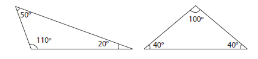
Thus, based on the angles of triangles, we can classify triangles into 3 types.
Try these
Complete the table
Serial Number |
angle A |
angle B |
angle C |
Sum of three angles |
Can a Triangle ABC be formed? |
Type of Triangle |
Serial Number 1 |
angle A 60 degree |
angle B 60 degree |
angle C 60 degree |
Sum of three angles 180 degree |
Can a Triangle ABC be formed? Yes |
Type of Triangle Acute angled triangle |
Serial Number 2 |
angle A 50 degree |
angle B 40 degree |
angle C 90 degree |
Sum of three angles dash |
Can a Triangle ABC be formed? dash |
Type of Triangle dash |
Serial Number 3 |
angle A 60 degree |
angle B 30 degree |
angle C 90 degree |
Sum of three angles dash |
Can a Triangle ABC be formed? dash |
Type of Triangle dash |
Serial Number 4 |
angle A 95 degree |
angle B 40 degree |
angle C 35 degree |
Sum of three angles dash |
Can a Triangle ABC be formed? dash |
Type of Triangle dash |
Serial Number 5 |
angle A 110 degree |
angle B 40 degree |
angle C 30 degree |
Sum of three angles dash |
Can a Triangle ABC be formed? dash |
Type of Triangle dash |
Serial Number 6 |
angle A 150 degree |
angle B 60 degree |
angle C 70 degree |
Sum of three angles dash |
Can a Triangle ABC be formed? dash |
Type of Triangle dash |
DO YOU KNOW
A triangle can have three acute angles, but cannot have more than one right angle or an obtuse angle.
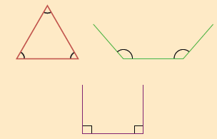
Activity
In the given figure, there are some triangles. Measure their sides and angles and name them in two ways. (One is done for you!)
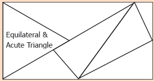
4.3.3 Triangle Inequality property
Think about the situation:
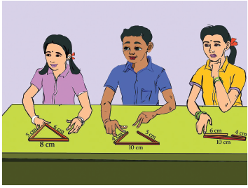
Three students Kamala, Madhan and Sumathi are asked to form triangles with the given sticks of measure 6 centimeter, 8 centimeter, 5 centimeter; 4 centimeter, 10 centimeter, 5 centimeter and 10 centimeter, 6 centimeter, 4 centimeter respectively. All of them try to form a triangle. While Kamala, the first girl is successful in forming a triangle, Madhan and Sumathi, next to Kamala are struggling. Why?
When they are trying to join the ends of the two smaller sticks, they find that the two smaller sticks coincide with the longer stick or shorter than the longer stick and they are unable to form triangles. From this, they understand that, to form a triangle the sum of two smaller sides must be greater than the third side. Thus,
In a triangle, the sum of any two sides of a triangle is greater than the third side. This is known as Triangle Inequality property.
Note
If three sides are equal in length, then definitely a triangle can be formed
AB plus BC greater than CA
BC plus CA greater than AB
CA plus AB greater than BC
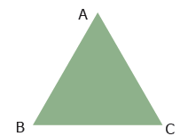
DO YOU KNOW
If any two sides of the triangle are given, then the length of the third side will lie between the difference and sum of the lengths of two given sides.
Example 1: Can a triangle be formed with 7-centimeter, 10 centimeter and 5 centimeter as its sides?
Solution: Instead of checking triangle inequality by all the sides in the triangle, check only with two smaller sides. Sum of two smaller sides of the triangle equal to 5 plus 7 equal to12 centimeter is greater than 10 centimeter, the third side. It is greater than the third side.
So, a triangle can be formed with the given sides.
Example 2: Can a triangle be formed with 7-centimeter, 7 centimeter and 7 centimeter as its sides?
Solution: If three sides are equal, then definitely a triangle can be formed, as the triangle inequality is satisfied.
Example 3: Can a triangle be formed with 8-centimeter, 3 centimeter and 4 centimeter as its sides?
Solution: The sum of two smaller sides equal to 3 plus 4 equal to 7 centimeter is less than 8 centimeter , the third side.
It is less than the third side.
So, a triangle cannot be formed with the given sides.
Try these
Can a triangle be formed with the given sides? If yes, state the type of triangle formed
Serial Number |
Line Segment A B |
Line Segment B C |
Line Segment C A |
Can a Triangle ABC be formed? |
Type of triangle |
Serial Number 1 |
Line Segment A B 7 centimeters |
Line Segment B C 10 centimeters |
Line Segment C A 6 centimeters |
Can a Triangle ABC be formed? Dash |
Type of triangle dash |
Serial Number 2 |
Line Segment A B 10 centimeters |
Line Segment B C 8 centimeters |
Line Segment C A 8 centimeters |
Can a Triangle ABC be formed? Dash |
Type of triangle dash |
Serial Number 3 |
Line Segment A B 8.5 meters |
Line Segment B C 7.3 meters |
Line Segment C A 6.8 meters |
Can a Triangle ABC be formed? Dash |
Type of triangle dash |
Serial Number 4 |
Line Segment A B 4 centimeters |
Line Segment B C 5 centimeters |
Line Segment C A 12 centimeters |
Can a Triangle ABC be formed? Dash |
Type of triangle dash |
Serial Number 5 |
Line Segment A B 15 meters |
Line Segment B C 20 meters |
Line Segment C A 20 meters |
Can a Triangle ABC be formed? Dash |
Type of triangle dash |
Serial Number 6 |
Line Segment A B 23 centimeters |
Line Segment B C 20 centimeters |
Line Segment C A 18 centimeters |
Can a Triangle ABC be formed? Dash |
Type of triangle dash |
Serial Number 7 |
Line Segment A B 3.2 centimeters |
Line Segment B C 1.5 centimeters |
Line Segment C A 1.5 centimeters |
Can a Triangle ABC be formed? Dash |
Type of triangle dash |
Example 4: Can a triangle be formed with the angles 80 degree, 30 degree, 40 degree?
Solution:
In a triangle, the sum of three angles is 180 degree.
Here, the sum of three angles equal to 80 degree plus 30 degree plus 40 degree equal to 150 degree (not equal to 180 degree)
So, a triangle cannot be formed with the given angles.
Think
Can the difference between two larger sides be less than the third side?
Activity
A triangle game : In each turn a student must draw one line connecting two dots. A line should not cross other lines or touch other dots than the two that are connected to. If a student closes a triangle with his line then he gets a point. Once there are no more lines that can be drawn the game is over and the student who gains more points wins the game.
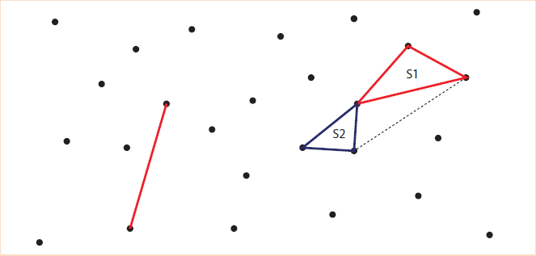
Think
In a right-angled triangle, what measures can the other two angles have?
Exercise 4.1
Question Number 1. Fill in the blanks:
a) Every triangle has at least dash acute angles.
b) A triangle in which none of the sides equal is called a dash
c) In an isosceles triangle dash angles are equal.
d) The sum of three angles of a triangle is dash
e) A right-angled triangle with two equal sides is called dash
Question Number 2. Match the following:
(1) No sides are equal - Isosceles triangle
(2) One right angle - Scalene triangle
(3) One obtuse angle - Right angled triangle
(4) Two sides of equal length - Equilateral triangle
(5) All sides are equal - Obtuse angled triangle
Question Number 3. In Triangle ABC, name the
a) Three sides: dash, dash, dash
b) Three Angles: dash, dash, dash
c) Three Vertices: dash, dash, dash
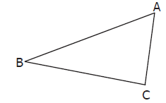
Question Number 4. Classify the given triangles based on its sides as scalene, isosceles or equilateral.
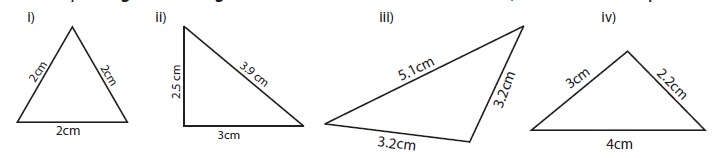
Question Number 5. Classify the given triangles based on its angles as acute angled, right angled or obtuse angled.
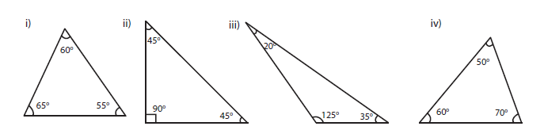
Question Number 6. Classify the following triangles based on its sides and angles.
![6 Triangles are given here. First triangle has 2 equal sides of length 6cm, and the third side is 4 cm, all angles are less than 90 degree. Second triangle has sides 8cm, 15 cm and 17 cm, one angle is 90 degree, third triangle has two equal sides of length 6cm, and the third side is 10 cm, one angle is greater than 90 degree. Fourth triangle has two equal sides of length 10cm, and the third side is 12cm, one angle is 90 degree. Fifth triangle has 3 equal sides of length 6.1cm , all the angles are less than 90 degree, Sixth triangle has sides 4.1 cm,4.6cm and 7.3 cm. one angle is greater than 90 degree.](images/image-112.png)
Question Number 7. Can a triangle be formed with the following sides? If yes, name the type of triangle.
(1) 8 centimeters , 6 centimeters , 4 centimeters
(2) 10 centimeters , 8 centimeters , 5 centimeters
(3) 6.2 centimeters , 1.3 centimeters , 3.5 centimeters
(4) 6 centimeters , 6 centimeters , 4 centimeters
(5) 3.5 centimeters , 3.5 centimeters , 3.5 centimeters
(6) 9 centimeters , 4 centimeters , 5 centimeters
Question Number 8. Can a triangle be formed with the following angles? If yes, name the type of triangle.
(1) 60 degree comma 60 degree comma 60 degree
(2) 90 degree comma 55 degree comma 35 degree
(3) 60 degree comma 40 degree comma 42 degree
(4) 60 degree comma 90 degree comma 90 degree
(5) 70 degree comma 60 degree comma 50 degree
(6) 100 degree comma 50 degree comma 30 degree
Question Number 9. Two angles of the triangles are given. Find the third angle.
(1) Eighty degree comma 60 degree
(2) 75 degree comma 35 degree
(3) 52 degree comma 68 degree
(4) 50 degree comma 90 degree
(5) 120 degree comma 30 degree
(6) 55 degree comma 85 degree
Question Number 10. I am a closed figure with each of my three angles is 60 degree. Who am I?
Question Number 11. Using the given information, write the type of triangle in the table given below
Serial Number |
Angle 1 |
Angle 2 |
Angle 3 |
Type of triangle based on angles |
Type of triangle based on sides |
Serial Number 1 |
Angle 1 60 degree |
Angle 2 40 degree |
Angle 3 80 degree |
Type of triangle based on angles Acute angled triangle |
Type of triangle based on sides Scalene Triangle |
Serial Number 2 |
Angle 1 50 degree |
Angle 2 50 degree |
Angle 3 80 degree |
Type of triangle based on angles dash |
Type of triangle based on sides dash |
Serial Number 3 |
Angle 1 45 degree |
Angle 2 45 degree |
Angle 3 90 degree |
Type of triangle based on angles dash |
Type of triangle based on sides dash |
Serial Number 4 |
Angle 1 55 degree |
Angle 2 45 degree |
Angle 3 80 degree |
Type of triangle based on angles dash |
Type of triangle based on sides dash |
Serial Number 5 |
Angle 1 75 degree |
Angle 2 35 degree |
Angle 3 70 degree |
Type of triangle based on angles dash |
Type of triangle based on sides dash |
Serial Number 6 |
Angle 1 60 degree |
Angle 2 30 degree |
Angle 3 90 degree |
Type of triangle based on angles dash |
Type of triangle based on sides dash |
Serial Number 7 |
Angle 1 25 degree |
Angle 2 64 degree |
Angle 3 91 degree |
Type of triangle based on angles dash |
Type of triangle based on sides dash |
Serial Number 8 |
Angle 1 120 degree |
Angle 2 30 degree |
Angle 3 30 degree |
Type of triangle based on angles dash |
Type of triangle based on sides dash |
Objective Type Questions
Question Number 12. The given triangle is dash.
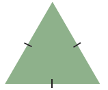
a) a right-angled triangle
b) an equilateral triangle
c) a scalene triangle
d) an obtuse angled triangle
Question Number 13. If all angles of a triangle are less than a right angle, then it is called dash.
a) an obtuse angled triangle
b) a right-angled triangle
c) an isosceles right angled triangle
d) an acute angled triangle
Question Number 14. If two sides of a triangle are 5 centimeter and 9 centimeters, then the third side is dash.
a) 5-centimeter
b) 3-centimeter
c) 4-centimeter
d) 14 centimeters
Question Number 15. The angles of a right-angled triangle are
a) acute, acute, obtuse
b) acute, right, right
c) right, obtuse, acute
d) acute, acute, right
Question Number 16. An equilateral triangle is
a) an obtuse angled triangle
b) a right-angled triangle
c) an acute angled triangle
d) a scalene triangle
Have you ever noticed that the wall and floor are always perpendicular to each other? So, to measure our heights, we make use of scale represented on the walls as shown in the figure. In Geometry, to measure the height of figures, we use perpendicular lines. Using a set square, find the height of the given figures.
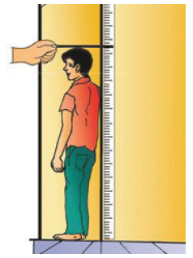
![Four triangles are given here. The first one is an Equilateral Triangle. A perpendicular line is drawn from the base to the opposite vertex. We have to find the height h. The second one is a right angled triangle, We have to find the height h The third one is an obtuse angled triangle, its based is extended and a perpendicular line is drawn from the base to the opposite vertex. We have to find the height h. The fourth picture is a parellelogram , a perpendicular line is drawn from the base to the opposite vertex. We have to find the height h](images/image-115.png)
Let us learn to construct perpendicular lines by using set square.
The set squares are two triangle shaped instruments in the Geometry Box. Each of them has a right angle. One set square has the angles 30 degree, 60 degree, 90 degree and the other set square has the angles 45 degree, 45 degree, 90 degree. The perpendicular edges are graduated in centimeters.
Set squares have several uses:
To construct the specific angles 30 degree, 45 degree, 60 degree, 90 degree
To draw parallel and perpendicular lines
To measure the height of the shapes
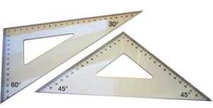
DO YOU KNOW
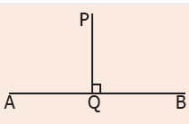
If the perpendicular from P meets AB at Q, the point Q is called the foot of the perpendicular from P to AB and the symbol "perpendicular" means “is perpendicular to” that is, PQ perpendicular AB
Example 5: Construct a line perpendicular to the given line at a point on the line.
Step 1: Draw a line AB and take a point P anywhere on the line.
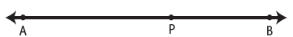
Step 2: Place the set square on the line in such a way that the vertex which forms right angle coincides with P and one arm of the right angle coincides with the line AB.
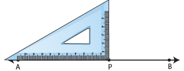
Step 3: Draw a line PQ through P along the other arm of the right angle of the set square.
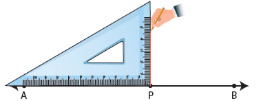
Step 4: The line PQ is perpendicular to the line AB at P. That is, PQ perpendicular AB and angle APQ equal to angle BPQ equal to 90˚.
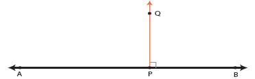
Example 6: Construct a line perpendicular to the given line through a point above it.
Step 1: Draw a line PQ. Take a point X anywhere above the line PQ.
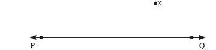
Step 2: Place one of the arms of the right angle of a set square along the line PQ and the other arm of its right angle touches the point X.
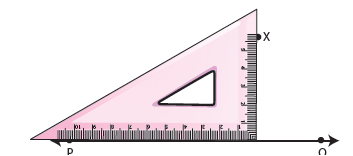
Step 3: Draw a line through the point X meeting PQ at Y.
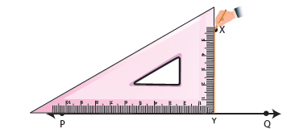
Step 4: The line XY is perpendicular to the line PQ at Y. That is, XY perpendicular PQ
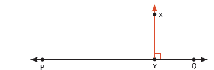
Place a scale on a paper and draw lines along both the edges of the scale as shown.
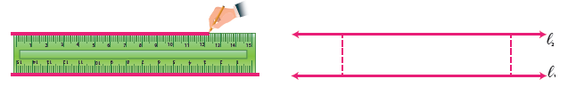
Place the set square at two different points on l1 and find the distance between l1 and l2. Are they equal? Yes. Thus, the perpendicular distance between a set of parallel lines remains the same.
Note
Parallel line segments need not be of equal length
Think
Identify the parallel lines in English alphabets (Capital Letters) and list the letters.
Examples: E W
Example 7: Draw a line segment AB equal to 6.5 centimeter and mark a point M above it. Through M draw a line parallel to AB.
Step 1: Draw a line. Mark two points A and B on the line such that AB equal to 6.5 centimeter. Mark a point M anywhere above the line.
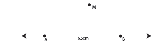
Step 2: Place the set square below AB in such a way that one of the edges that form a right angle lies along AB. Place the scale along the other edge of the set square as shown in the figure.
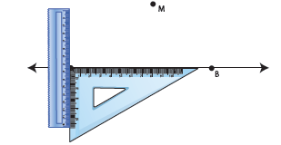
Step 3: Holding the scale firmly, Slide the set square along the edge of the scale until the other edge of the set square reaches the point M. Through M draw a line as shown.
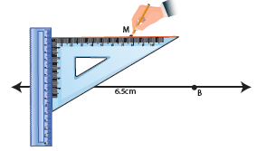
Step 4: The line MN is parallel to AB. That is, MN parallel AB
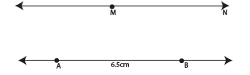
Example 8: Draw a line and mark a point R at a distance of 4.8 centimeter above the line. Through R draw a line parallel to the given line.
Step 1: Using a scale draw a line AB and mark a point Q on the line.
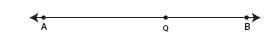
Step 2: Place the set square in such a way that the vertex of the right angle coincides with Q and one of the edges of right angle lies along AB. Mark the point R such that QR equal to 4.8 centimeter .
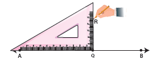
Step 3: Place the scale and the set square as shown in the figure.
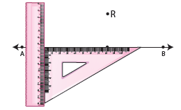
Step 4: Hold the scale firmly and slide the set square along the edge of the scale until the other edge touches the point R. Draw a line RS through R.
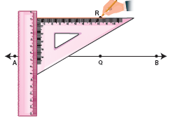
Step 5: The line RS is parallel to AB. That is, RS parallel AB.
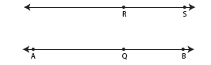
Example 9: Draw a line segment PQ equal to 12 centimeters. Mark two points M, N at a distance of 5 centimeter above the line segment PQ. Through M and N draw a line parallel to PQ.
Step 1: Using a scale, draw a line segment PQ equal to 12 centimeters. Mark two points A and B on the line segments.
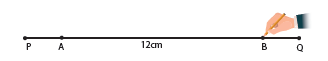
Step 2: Using the set square as shown, mark points M and N such that AM equal to BN equal to 5 centimeters.
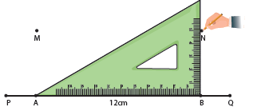
Step 3: Using the scale, join M and N. MN is parallel to PQ. That is, MN parallel PQ.
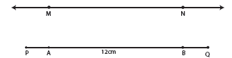
GEOMETRY
ICT CORNER
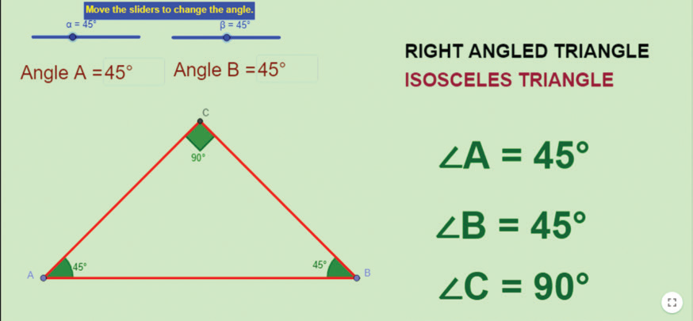
Step 1
Open the Browser and type the URL Link given below (or) Scan the QR Code. GeoGebra work sheet named “Geometry” will open. The work sheet contains three activities. 1. Types of triangles, 2. Perpendicular line construction and 3. Parallel line construction.
In the first activity move the sliders or enter the angle to change the Angles of the triangle and check what type of triangle is it and compare with the angles.
Step 2
In the second and third activity you can learn how to draw Perpendicular and parallel lines through a Video.
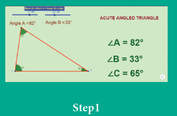
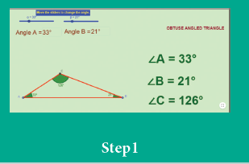
Browse in the link:
Geometry: https://ggbm.at/dPXHSSTF or Scan the QR Code.
Exercise 4.2
Question Number 1. Draw a line segment AB equal to 7 centimeter and mark a point P on it. Draw a line perpendicular to the given line segment at P.
Question Number 2. Draw a line segment LM equal to 6.5 centimeter and take a point P not lying on it. Using a set square construct a line perpendicular to LM through P.
Question Number 3. Find the distance between the given lines using a set square at two different points on each of the pairs of lines and check whether they are parallel.
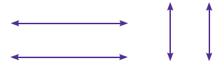
Question Number 4. Draw a line segment measuring 7.8 centimeter. Mark a point B above it at a distance of 5 centimeter. Through B draw a line parallel to the given line segment.
Question Number 5. Draw a line and mark a point R below it at a distance of 5.4 centimeter Through R draw a line parallel to the given line.
Exercise 4.3
Miscellaneous Practice Problems
Question Number 1. What are the angles of an isosceles right angled triangle?
Question Number 2. Which of the following correctly describes the given triangle?
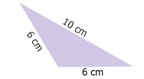
(a) It is a right isosceles triangle.
(b) It is an acute isosceles triangle.
(c) It is an obtuse isosceles triangle.
(d) It is an obtuse scalene triangle.
Question Number 3. Which of the following is not possible?
(a) An obtuse isosceles triangle
(b) An acute isosceles triangle
(c) An obtuse equilateral triangle
(d) An acute equilateral triangle
Question Number 4. If one angle of an isosceles triangle is 124 degree, then find the other angles.
Question Number 5. The diagram shows a square ABCD. If the line segment joins A and C, then mention the type of triangles so formed.
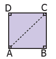
Question Number 6. Draw a line segment AB of length 6 centimeter. At each end of this line segment AB, draw a line perpendicular to the line AB. Are these lines parallel?
Challenge Problems
Question Number 7. Is a triangle possible with the angles 90 degree, 90 degree and 0 degree? Why?
Question Number 8. Which of the following statements is true? Why?
(a) Every equilateral triangle is an isosceles triangle.
(b) Every isosceles triangle is an equilateral triangle.
Question Number 9. If one angle of an isosceles triangle is 70 degree, then find the possibilities for the other two angles.
Question Number 10. Which of the following can be the sides of an isosceles triangle?
a) 6 centimeter, 3 centimeter, 3 centimeter
b) 5 centimeter, 2 centimeter, 2 centimeter
c) 6 centimeter, 6 centimeter, 7 centimeter
d) 4 centimeter, 4 centimeter, 8 centimeter
Question Number 11. Study the given figure and identify the following triangles.
(a) equilateral triangle
(b) isosceles triangles
(c) scalene triangles
(d) acute triangles
(e) obtuse triangles
(f) right triangles
Question Number 12. Two sides of the triangle are given in the table. Find the third side of the triangle.
Serial Number
|
Side 1 |
Side 2 |
The length of the third side (any three measures) |
Serial Number 1. |
Side 1 7 centimeter |
Side 2 4 centimeter |
The length of the third side (any three measures dash |
Serial Number 2 |
Side 1 8 centimeter |
Side 2 8 centimeter |
The length of the third side (any three measures dash |
Serial Number 3 |
Side 1 7.5centimeter |
Side 2 3.5 centimeter |
The length of the third side (any three measures dash |
Serial Number 4 |
Side 1 10 centimeter |
Side 2 14 centimeter |
The length of the third side (any three measures dash |
Question Number 13. Complete the following table:
Types of Triangle or Its Angles |
Acute angled triangle |
Right angled triangle |
Obtuse angled triangle |
Any two angles |
Always acute angles |
DASH |
Always acute angles |
Third angle |
DASH |
Right angle |
DASH |
Summary
A closed figure formed by three-line segments is called a triangle.
A triangle has 3 sides, 3 angles and 3 vertices.
Based on the sides of triangles, we can classify triangles into 3 types as scalene triangle, isosceles triangle and equilateral triangle.
Based on the angles of triangles, we can classify triangles into 3 types as acute angled triangle, right angled triangle and obtuse angled triangle.
In a triangle, the sum of any two sides is greater than the third side. This is known as Triangle Inequality property.
Sum of three angles of a triangle is 180 degree.
Parallel and Perpendicular lines can easily be drawn using set squares.
The distance between a set of parallel lines always remains the same.